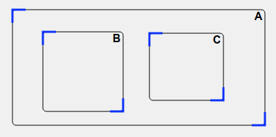
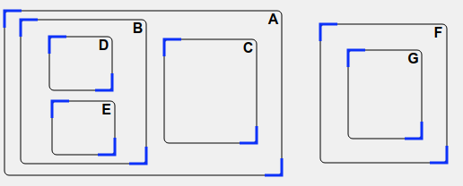
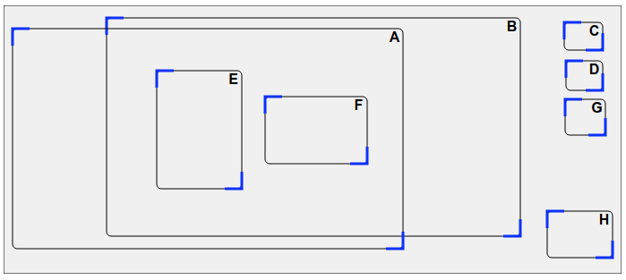
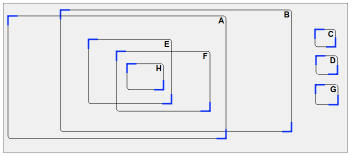
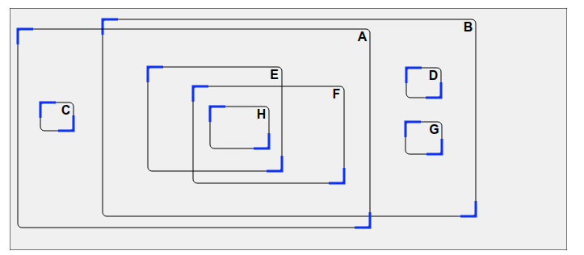

Tämänhetkinen tila kuvaa, mitkä tehtävän alaosan harmaalla työalueella sijaitsevat suorakulmiot ovat sisäkkäin.
| Nuoli B:stä A:han tarkoittaa, että suorakulmio B on kokonaan suorakulmion A sisällä. |
Asettele työalueen suorakulmiot siten, että niiden tämänhetkinen tila tulee samanlaiseksi kuin tavoitetila. Suorakulmioita voi liikuttaa raahaamalla keskeltä, ja niiden kokoja voi muuttaa raahaamalla sinisistä kulmista.
Tässä piti asettaa suorakulmiot B ja C suorakulmion A sisälle.
Huomaa, että suorakulmio B ei saa olla suorakulmion C sisällä eikä suorakulmio C saa olla suorakulmion B sisällä.
Suorakulmiot B ja C pitää asettaa suorakulmion A sisälle, ja lisäksi suorakulmiot D ja E suorakuomion B sisälle. Näistä erillään pitää vielä asettaa suorakulmio G suorakulmion F sisälle.
Suorakulmio C on helppo asettaa oikein, koska se tarvitsee ainoastaan asettaa suorakulmion A sisälle ilman suhteita muihin suorakulmioihin. Samaan tapaan myös suorakulmiot D ja G ovat yksinkertaisia: ne tarvitsee ainoastaan asettaa suorakulmion B sisälle. Jätetään siis aluksi suorakulmiot C, D ja Gsivuun, ja muodostetaan ratkaisu muiden suorakulmioiden osalta. Nämä kolme suorakulmiota voidaan suoraviivaisesti lisätä ratkaisuun vasta lopuksi.
Suorakulmioiden E ja F pitää olla sekä suorakulmion A että B sisällä. Asetetaan siis suorakulmiot A ja B toistensa kanssa osin päällekkäin ja sitten E ja F kyseisen päällekkäin olevan osan sisälle.
Suorakulmion H pitää olla sekä suorakulmion E että F sisällä, joten muutetaan jälkimmäisten asettelu osin päällekkäiseksi ja asetetaan H päällekkäisen osan sisälle.
Nyt meillä on enää jäljellä kolme alussa sivuun jättämäämme suorakulmiota C, D ja G, joista ensimmäinen voidaan suoraviivaisesti lisätä suorakulmion A ja kaksi jälkimmäistä suorakulmion B sisälle. Ratkaisu on valmis!
Tietojenkäsittelyssä käytetään yleisestä graafeja kuvaamaan jonkin systeemin osien välisiä suhteita. Graafi koostuu solmuista sekä niiden välisiä yhteyksiä kuvaavista kaarista. Tässä tehtävässä pienet mustat kirjaimilla merkityt neliöt olivat graafin solmuja ja niiden väliset nuolet kaaria, ja tehtävässä piti osata tulkita annetun graafin pohjalta, millaisia suorakulmioiden välisiä suhteita se kuvaa.
Tietojenkäsittelytieteessä on kehitetty vuosien saatossa suuri määrä graafien ominaisuuksia kuvaavaa teoriaa sekä monia erilaisia graafeihin liittyviä ongelmia ratkaisevia algoritmeja. Tämän vuoksi monet tietojenkäsittelyn sovelluksissa ratkaistavat ongelmat pyritään usein esittämään graafimuodossa, jotta ongelman analysoinnissa ja ratkaisussa voitaisiin hyödyntää valmiiksi tunnettuja teoreettisia tuloksia ja algoritmeja.
Katso lisää esim. https://fi.wikipedia.org/wiki/Graafi.